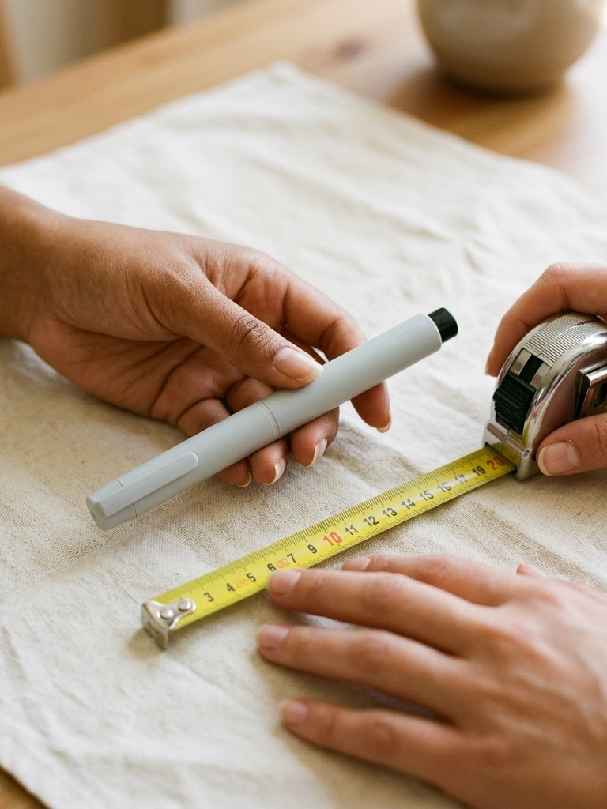

Lose the weight. Keep the rest of you.
GLP-1 medicines can be powerful tools. Used well, they change health. Used carelessly, they can cost muscle, hair and skin quality. This clinic plans for all three.

A tool, not a shortcut.
GLP-1 receptor agonists, such as semaglutide and tirzepatide (which also acts on GIP), act on appetite and blood-sugar signalling. Alongside nutrition, movement and follow-up, they can produce significant weight loss. They are prescription medicines that need a medical assessment first.
Doses are started low and increased gradually, often every few weeks, to reduce side effects. Nausea, constipation, diarrhoea and reflux are common early on and are managed with dose pacing and food choices.
May suit
- BMI 30 or above
- BMI 27 or above with a weight-related condition
- Type 2 diabetes, prediabetes, fatty liver, sleep apnoea, PCOS
- Past attempts at lifestyle change that did not hold
Needs review first
- Pregnancy or planning pregnancy
- History of pancreatitis or gallbladder disease
- Personal or family history of medullary thyroid cancer or MEN2
- Severe digestive disease, or a history of eating disorder
What fast weight loss does to the rest of you.
Muscle
A meaningful share of weight lost can be lean mass, including muscle. Protein targets and resistance training protect strength and metabolism.
Hair
Rapid loss can trigger temporary shedding about 2 to 4 months later. Checking iron, protein and other nutrients early reduces the risk.
Skin & face
Faces can look hollow and bodies can have loose skin. A steady pace, hydration, and later options such as tightening or contouring are planned from the start.
Four stages, one doctor.
Assess
History, examination, bloodwork, blood pressure and body composition. A candid conversation about goals, past attempts and food.
Start low
Medicine chosen if appropriate, dose increased gradually, with a side-effect plan from day one.
Protect
Protein, strength training, hydration, sleep, and regular reviews of hair, skin and mood.
Maintain & contour
A plan for staying at goal, and aesthetic options for the body you now have.
The four non-negotiables.
- Protein at every meal, at a level your doctor sets for you
- Strength training two to three times a week to protect muscle
- Fluids and fibre to manage constipation and dehydration
- Sleep and stress care, which influence both appetite and hair
We also monitor weight and waist, blood pressure, glucose, cholesterol, liver and kidney tests, and nutrients such as iron, B12 and vitamin D.
Falsified and unregulated GLP-1 products have been reported worldwide and sold online. Only use medicines prescribed and supplied through a licensed pharmacy, with the packaging and batch checked.
In clinical trials, many people regain a large share of the weight after stopping, if no maintenance plan is in place. That is why maintenance is planned from the start.
Skin-aware body care.
Skin tightening
Non-surgical options for mild to moderate laxity, selected for darker skin tones.
Facial volume
Conservative restoration where weight loss has changed the face.
Stretch marks
Needling and other therapies to improve texture and colour.
Surgical contouring
Considered once weight has been stable for several months, with careful scar planning for keloid-prone skin.
Healthier, and still recognisably you.


Medically supervised weight programme7 months
Layout preview. Images shown are illustrative placeholders. Replace with real photographs only where the patient has given written consent, shot with identical lighting, angle and distance, unretouched. Individual results vary.
Weight care FAQ
Will I regain the weight if I stop?
Many people do if habits and support do not change. Maintenance, including nutrition, strength training and sometimes ongoing medication, is planned from the start.
Is it only for people with obesity?
Eligibility depends on BMI, health conditions and medical history, and is a decision made at consultation.
Will it make my hair fall out?
Temporary shedding can follow rapid weight loss. Nutrient support and a steady pace reduce it, and it usually recovers within months.
How fast should I lose weight?
A steady pace is safer for muscle, skin and hair. Your doctor will set targets for you rather than chase the fastest possible loss.
Can I have a tummy tuck or body lift later?
Often yes, once weight has been stable for some months and you are healthy. Planning for scars starts early.